Chapter 5 Stratification and Post-Stratification in Randomized Experiments
Block what you can and randomize what you cannot.
This is the second most famous quote from George Box16. This chapter will explain its meaning.
23 Stratification
A CRE may generate an undesired treatment allocation by chance. Let us start with a CRE with a discrete covariate  , and define
, and define
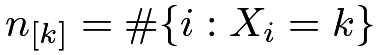
and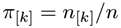
as the number and proportion of units in stratum
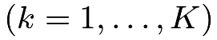
. A CRE assigns units to the treatment group and
units to the treatment group and  units to the control group, which results in
units to the control group, which results in
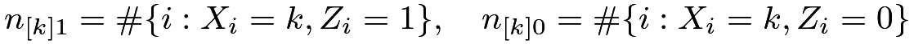 |
units in the treatment and control groups, respectively, within stratum . With positive probability,
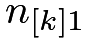
or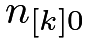
is zero for some, that is, it is possible that some strata only have treated or control units. Even if none of the ’s or ’s are zero, with high probability
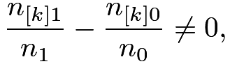 |
(21) |
and the magnitude can be quite large. So the proportions of units in stratum are different across the treatment and control groups although on average their difference is zero (see Problem 5.1):
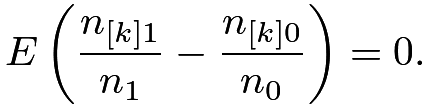 |
(22) |
When
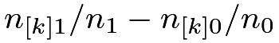
is large for some strata’s, the treatment and control groups have undesirable covariate imbalance. Such covariate imbalance deteriorates the quality of the experiment, making it difficult to interpret the results of the experiment since the difference in the outcomes may be attributed to the treatment or the covariate imbalance.
How can we actively avoid covariate imbalance in the experiment? We can conduct stratified randomized experiments (SRE).
Definition 5.1 (SRE)
Fix the ’s or ’s.
We conduct  independent CREs within the strata of a discrete covariate
independent CREs within the strata of a discrete covariate  .
.
In agricultural experiments, the SRE is also called the randomized block design, with the strata called the blocks. Analogously, stratified randomization is also called block randomization.17 The total number of randomizations in an SRE equals
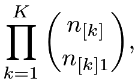 |
and each feasible randomization has equal probability. Within stratum , the proportion of units receiving the treatment is
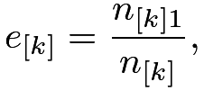 |
which is also called the propensity score, a concept that will play a central role in Part III of this book (see Definition 11.1). An SRE is different from a CRE: first, all feasible randomizations in an SRE form a subset of all feasible randomizations in a CRE, so
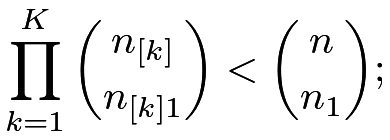 |
second,
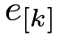
is fixed in an SRE but random in a CRE.For every unit  , we have potential outcomes
, we have potential outcomes  and
and  , and individual causal effect
, and individual causal effect  For stratum , we have the stratum-specific average causal effect
For stratum , we have the stratum-specific average causal effect
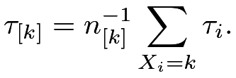 |
The average causal effect is
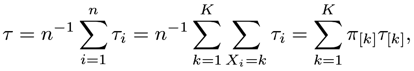 |
which is a weighted average of the stratum-specific average causal effects.
24 FRT
24.1 Theory
In parallel with the discussion of a CRE, I will start with the FRT in an SRE. The sharp null hypothesis is still
 |
The fundamental idea of the FRT applies to any randomized experiment: we can use any test statistic  , where
, where
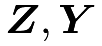
and are the treatment vector, observed outcome vector and the covariate matrix, respectively. Under the SRE and
are the treatment vector, observed outcome vector and the covariate matrix, respectively. Under the SRE and  , the test statistic
, the test statistic  has a known distribution because
has a known distribution because  has a known distribution under the SRE. However, we must be careful with two subtle issues. First, when we simulate the treatment vector, we must permute the treatment indicators within strata of according to Definition 5.1. The resulting FRT is sometimes called the conditional randomization test or conditional permutation test. Second, we should choose test statistics that can reflect the nature of the SRE. Below I give some canonical choices of the test statistic.
has a known distribution under the SRE. However, we must be careful with two subtle issues. First, when we simulate the treatment vector, we must permute the treatment indicators within strata of according to Definition 5.1. The resulting FRT is sometimes called the conditional randomization test or conditional permutation test. Second, we should choose test statistics that can reflect the nature of the SRE. Below I give some canonical choices of the test statistic.
Example 5.1 (Stratified estimator)
Motivated by estimating  (see Chapter 25 below), we can use the following stratified estimator in the FRT:
(see Chapter 25 below), we can use the following stratified estimator in the FRT:
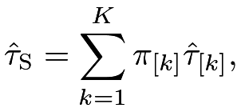 |
where
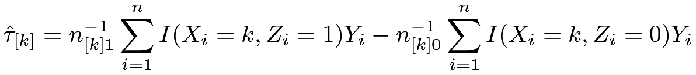 |
is the stratum-specific difference-in-means within stratum .
Example 5.2 (Studentized stratified estimator)
Motivated by the studentized statistic in the simple two-sample problem, we can use the following studentized statistic for the stratified estimator in the FRT:
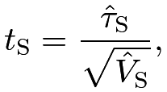 |
with
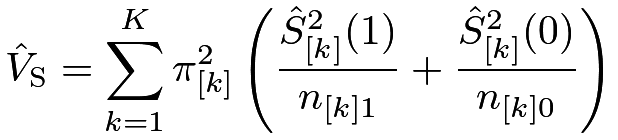 |
where 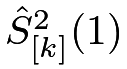 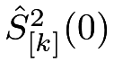
Example 5.3 (Combining Wilcoxon rank-sum statistics)
We first compute the Wilcoxon rank sum statistic 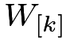 (recall Example 3.3) and then combine them as
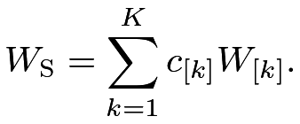 |
Based on different asymptotic schemes and optimality criteria, Van Elteren, (1960) proposed two weighting methods, one with
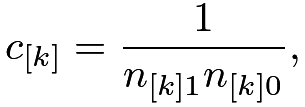 |
and the other with
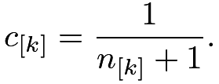 |
The motivations for these weights are quite technical, and other choices of weights may also be reasonable.
Example 5.4 (Hodges and Lehmann, (1962)’s aligned rank statistic)
Van Elteren, (1960)’s statistic works well with a few large strata. However, it does not work well with many small strata since it does not make enough comparisons, potentially losing information in the data. Hodges and Lehmann, (1962) proposed a test statistic that makes more comparisons across strata after standardizing the outcomes. They suggested first centering the outcomes as
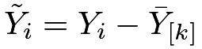 |
with the stratum-specific mean
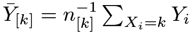 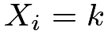 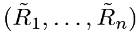 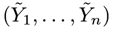
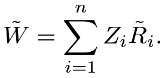 |
We can simulate the exact distributions of the above test statistics under the SRE. We can also calculate their means and variances and obtain the  -values based on Normal approximations.
-values based on Normal approximations.
After searching for a while, I failed to find a detailed discussion of the Kolmogorov–Smirnov statistic for the SRE. Below is my proposal.
Example 5.5 (Kolmogorov–Smirnov statistic)
We compute 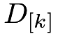. The final test statistic can be
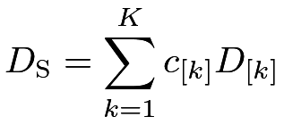 |
or
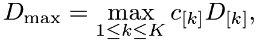 |
where 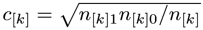 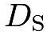 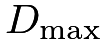
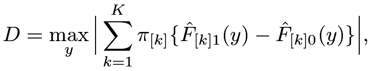 |
where 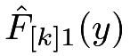 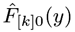 is appropriate in both the cases with large strata and the cases with many small strata.
is appropriate in both the cases with large strata and the cases with many small strata.
24.2 An application
The Penn Bonus experiment is an example to illustrate the FRT in the SRE. The dataset used by Koenker and Xiao, (2002) is from a job training program stratified on quarter, with the outcome being the duration before employment.
I will focus on
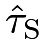
and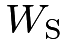
, and leave the FRT with other statistics as Problem 5.6. The following function computes and :The following function generates a random treatment assignment in the SRE based on the observed data:
Based on the above data and functions, we can simulate the randomization distributions of the test statistics and compute the -values.
In the above, I calculate the -values based on left-tail probabilities because the treatment has a negative effect on the outcome.
See Figure 10 for more details about the observed test statistics and randomization distributions.
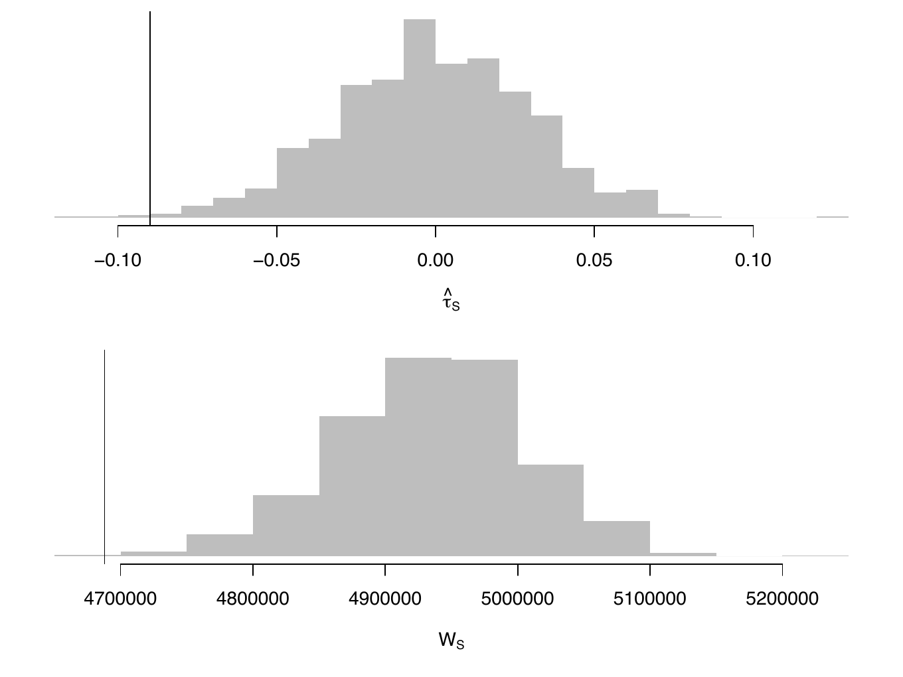
 Monte Carlo draws.
Monte Carlo draws.25 Neymanian inference
25.1 Point and interval estimation
Statistical inference for an SRE builds on the fact that it essentially consists of independent CREs. Based on this, we can extend Neyman, (1923)’s results to the SRE. Within stratum , the difference-in-means
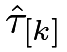
is unbiased for![\tau_{[k]}](m/c2b5b47935a4.png) with variance
with variance
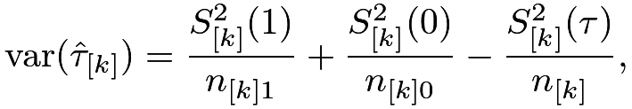 |
where
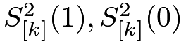
and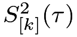
are the stratum-specific variances of potential outcomes and the individual causal effects, respectively. Therefore, the stratified estimator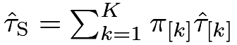
is unbiased for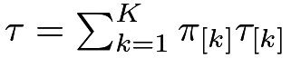
with varianceIf and , then we can obtain the sample variances and of the outcomes within stratum and construct a conservative variance estimator
where and are the stratum-specific sample variances of the outcomes under treatment and control, respectively. Based on a Normal approximation of , we can construct a Wald-type  confidence interval for :
confidence interval for :
From a hypothesis testing perspective, under , we can compare with the standard Normal quantiles to obtain asymptotic -values. The statistic appears in Example 5.2 for the FRT. Chapter 8 later will show that using in the FRT yields finite-sample exact -value under and asymptotically valid -value under .
Here I omit the technical details for the CLT of . See Liu and Yang, (2020) for a proof, which includes the two regimes with a few large strata and many small strata. I will illustrate this theoretical issue using numerical examples in Chapter 25.2 below.
25.2 Numerical examples
The following function computes the Neymanian point and variance estimators under the SRE:
The first simulation setting has and each stratum has units. TauHat and VarHat are the point and variance estimators over simulations.
The upper panel of Figure 11 shows the histogram of the point estimator, which is symmetric and bell-shaped around the true parameter. From the above, the average value of the variance estimator is almost identical to the variance of the estimators because the individual causal effects are constant.
The second simulation setting has and each stratum has  units.
units.
The lower panel of Figure 11 shows the histogram of the point estimator, which is symmetric and bell-shaped around the true parameter. Again, the average value of the variance estimator is almost identical to the variance of the estimators because the individual causal effects are constant.
We finally use the Penn Bonus Experiment to illustrate the Neymanian inference in an SRE. Applying the function Neyman_SRE to the dataset, we obtain:
So the job training program significantly shortens the log of the duration time before employment.
25.3 Comparing the SRE and the CRE
What are the benefits of the SRE compared with the CRE? I have motivated the SRE from the covariate balance perspective. In addition, I will show that better covariate balance in turn results in better estimation precision of the average causal effect. To make a fair comparison, I assume that for all which ensures that the difference in means equals the stratified estimator:
| (23) |
We now compare the sampling variances. The classic analysis of variance technique motivates the decomposition of the total variance into the summation of the within-strata and between-strata variances, yielding
 |
||||
|
||||
|
||||
|
and similarly,
|
||||
|
The variance of the difference-in-means estimator under the CRE decomposes into
|
 |
|||
|
||||
With large ’s, it is approximately
 |
||||
The constant propensity scores assumption ensures
which allow us to rewrite the variance of under the SRE as
|
||||
|
With large ’s, approximately, the difference between  and
and  is
is
which is nonnegative because it equals (see Problem 5.4)
| (24) |
The difference in (24) is zero only in the extreme case that
for . When the covariate is predictive of the potential outcomes, the above quantities are usually not all zeros, which ensures the efficiency gain of the SRE compared with the CRE. Only in the extreme cases that the covariate is not predictive at all, the large-sample efficiency gain is zero. In those cases, the SRE can even result in less efficient estimators in finite samples. The above discussion corroborates the quote from George Box at the beginning of this chapter.
I will end this section with several remarks. First, the above comparison is based on the sampling variance, and we can also compare the estimated variances under the SRE and the CRE. The results are similar. Second, increasing improves efficiency, but this argument depends on the large strata assumption. So we face a trade-off in practice. We cannot arbitrarily increase , and the most extreme case is , which is called the matched-pairs experiment and will be discussed in Chapter 7.
26 Post-stratification in a CRE
In a CRE with a discrete covariate , the numbers of units receiving the treatment and control are random within stratum . In a SRE, these numbers are fixed. But if we conduct conditional inference given , then a CRE becomes a SRE. Mathematically, if none of the components of are zero, then
| (25) |
that is, the conditional distribution of from a CRE given is identical to the distribution of from an SRE.
I leave the proof of (25) as Problem 5.5.
So conditional on , we can analyze a CRE with a discrete covariate in the same way as in a SRE.
In particular, the FRT becomes a conditional FRT, and the Neymanian analysis becomes post-stratification:
which has an identical form as . The variance of  conditioning on is identical to the variance of under the SRE.
conditioning on is identical to the variance of under the SRE.
Hennessy et al., (2016) used simulation to show that the conditional FRT is often more powerful than the unconditional one. Miratrix et al., (2013) used theory to show that in many cases, post-stratification improves efficiency compared with  . Both results hold if is predictive of the outcome. However, the simulation is based on a limited number of data-generating processes, and the theory assumes all strata are large enough. We can not go too extreme in the conditional FRT or post-stratification because with a larger it is more likely that some or become zero. Small or zero values of or greatly reduce the number of randomizations in the FRT, possibly reducing the power dramatically. The problem for the Neymanian counterpart is more salient because we cannot even define and the corresponding variance estimator.
. Both results hold if is predictive of the outcome. However, the simulation is based on a limited number of data-generating processes, and the theory assumes all strata are large enough. We can not go too extreme in the conditional FRT or post-stratification because with a larger it is more likely that some or become zero. Small or zero values of or greatly reduce the number of randomizations in the FRT, possibly reducing the power dramatically. The problem for the Neymanian counterpart is more salient because we cannot even define and the corresponding variance estimator.
Stratification uses in the design stage and post-stratification uses in the analysis stage. They are duals for using .
Asymptotically, their difference is small with large strata (Miratrix et al.,, 2013).
26.1 Meinert et al., (1970)’s Example
We use the data from a CRE reported in Meinert et al., (1970), which were also used by Rothman et al., (2008). The treatment is tolbutamide and the control is a placebo.
| Age | ||
|---|---|---|
| Surviving | Dead | |
 |
98 | 8 |
 |
115 | 5 |
| Age | ||
|---|---|---|
| Surviving | Dead | |
|
76 | 22 |
|
69 | 16 |
| Total | ||
|---|---|---|
| Surviving | Dead | |
|
174 | 30 |
|
184 | 21 |
The following table shows the estimates for two strata separately, the post-stratified estimator, and the crude estimator ignoring the binary covariate, as well as the corresponding standard errors.
| stratum 1 | stratum 2 | post-stratification | crude | |
|---|---|---|---|---|
| est | ||||
| se |
The crude estimator and the post-stratification estimator do not lead to fundamentally different results. However, the crude estimator is larger than both of the stratum-specific estimators, whereas the post-stratification estimator is within the range.
26.2 Chong et al., (2016)’s Example
Chong et al., (2016) conducted an SRE on 219 students of a rural secondary school in the Cajamarca district of Peru during the 2009 school year. They first provided the village clinic with iron supplements and trained the local staff to distribute one free iron pill to any adolescent who requested one in person. They then randomly assigned students to three arms with three different types of videos: in the first video, a popular soccer player was encouraging the use of iron supplements to maximize energy (“soccer” arm); in the second video, a physician was encouraging the use of iron supplements to improve overall health (“physician” arm); the third video did not mention iron at all (“control” arm). The experiment was stratified on the class level (1–5). The treatment and control group sizes within classes are shown below:
One outcome of interest is the average grades in the third and fourth quarters of 2009, and an important background covariate was the anemia status at baseline. I will only use a subset of the original data in this chapter.
We can use the Neyman_SRE function defined before to compute the stratified estimator and its estimated variance.
An important additional covariate is the baseline anemic indicator which is quite important for predicting the outcome. Further conditioning the baseline anemic indicator, we have an experiment with strata, with the treatment and control group sizes shown above. Again we can use the Neyman_SRE function defined before to compute the post-stratified estimator and its estimated variance.
The following table compares these two estimators. The post-stratified estimator yields a much smaller -value.
| est | se | t.stat | p.value | |
| stratify | 0.406 | 0.202 | 2.005 | 0.045 |
|---|---|---|---|---|
| stratify and post-stratify | 0.463 | 0.190 | 2.434 | 0.015 |
This example illustrates that post-stratification can be used not only in the CRE but also in the SRE with additional discrete covariates.
27 Practical questions
How do we choose to construct an SRE? Theoretically, should be predictive of the potential outcomes. In some cases, the experimenter has enough background knowledge about the predictive covariates based on, for example, some pilot studies.
Then the choice of should be straightforward. In some other cases, this background knowledge may not be clear enough. Experimenters instead choose based on logistical convenience, for example, can be the indicator for the study areas or the cohort of students.
The choice of is a related problem. Theoretically, more stratification increases the estimation efficiency if all strata are large enough. However, extremely large may even decrease the estimation efficiency. In simulation studies, we observe diminishing marginal returns of increasing . Anecdotally, often suffices for efficiency gain (the magic number  will appear again in Chapter 11). Some experimenter prefers the most extreme version of the SRE with . This results in the matched-pairs experiment, which will be discussed in Chapter 7 later.
will appear again in Chapter 11). Some experimenter prefers the most extreme version of the SRE with . This results in the matched-pairs experiment, which will be discussed in Chapter 7 later.
Some experiments have multidimensional continuous covariates. Can the SRE still be used? If we have a pilot study, we can build a model for the potential outcome  given those covariates, and then we can choose as a discretized version of the predictor
given those covariates, and then we can choose as a discretized version of the predictor  . In general, if we do not have such a pilot study or we do not want to make ad hoc discretizations, we can use a more general strategy called rerandomization, which will be the topic for Chapter 6.
. In general, if we do not have such a pilot study or we do not want to make ad hoc discretizations, we can use a more general strategy called rerandomization, which will be the topic for Chapter 6.
28 Homework Problems
5.1 Covariate balance in the CRE
Under the CRE, prove (22).
5.2 Consequence of the constant propensity score
Prove (23).
5.3 Consquence of constant individual causal effects
Assume that the individual causal effects are constant  for all
for all  .
Consider the following class of weighted estimator for :
.
Consider the following class of weighted estimator for :
where the weights ’s are non-negative for all .
Find the condition on the ’s such that is unbiased for . Among all unbiased estimators, find the weights that give the with the minimum variance.
5.4 Compare the CRE and SRE
Prove (24).
5.5 From the CRE to the SRE
Prove (25).
5.6 More FRTs for Section 24.2
Extend the analysis in Section 24.2 using FRTs with other test statistics.
5.7 FRT for an SRE in Imbens and Rubin, (2015)
Imbens and Rubin, (2015) discussed an SRE from the Student/Teacher Achievement Ratio experiment conducted in 1985–1986 in Tennessee. The kindergarten data are below:
The strata correspond to schools, and the unit of analysis is the teacher or class. The treatment equals  for small classes (13–17 students per teacher) and
for small classes (13–17 students per teacher) and  for regular classes (22–25 students per teacher). The outcome is the standardized average mathematics score.
for regular classes (22–25 students per teacher). The outcome is the standardized average mathematics score.
Reanalyze the Project STAR data below using the FRT. Use , and in the FRT. Compare the -values.
Remark: This book uses  for the treatment indicator but Imbens and Rubin, (2015) use
for the treatment indicator but Imbens and Rubin, (2015) use
5.8 A multi-center trial
Gould, (1998, Table 1) reported the following data from a multi-center trial:
This is a SRE with centers being the strata.
The trial was conducted to study the efficacy and tolerability of finasteride, a drug for treating benign prostatic hyperplasia.
Within each of the centers, patients were randomized into three arms: control, finasteride 1mg, and finasteride 5mg. The above dataset
provides summary statistics for the outcome, which is the change from baseline in total symptom score. The total symptom score is the sum of the responses to nine questions (score to  ) about symptoms of various aspects of impaired urinary ability. The meanings of the columns are:
) about symptoms of various aspects of impaired urinary ability. The meanings of the columns are:
- 1.
center: ID of the centers;
- 2.
n0, n1, n5: sample sizes under the three arms;
- 3.
mean0, mean1, mean5: means of the outcomes under the three arms;
- 4.
sd0, sd1, sd5: standard deviations of the outcomes under the three arms.
The individual-level outcomes are not reported so we cannot implement the FRT. However, the Neymanian inference only requires the summary statistics. Report the point estimators and variance estimators for comparing “finasteride 1mg” and “finasteride 5mg” to “control”, separately.
5.9 Data re-analyses
Re-analyze the LaLonde data used in Chapter 21.3. Conduct both Fisherian and Neymanian inferences.
The original experiment is a CRE. Now we pretend that the original experiment is an SRE. First, re-analyze the data pretending that the experiment is stratified on the race (black, Hispanic, or other). Second, re-analyze the data pretending that the experiment is stratified on marital status. Third, re-analyze the data pretending that the experiment is stratified on the indicator of a high school diploma.
Compare with the results obtained under a CRE.
5.10 Recommended reading
Miratrix et al., (2013) provided a solid theory for post-stratification and compared it with stratification. A main theoretical result is that their difference is small asymptotically although they can differ in finite samples.
脚注
16. His most famous quote is “all models are wrong but some are useful” (Box,, 1979, page 202).
17. Chapter 14.3 mentioned two Fisherian principles for experiments: randomization and replication. Blocking is the third Fisherian principle.